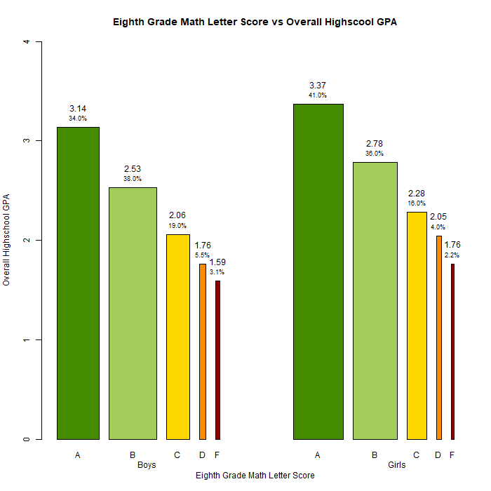
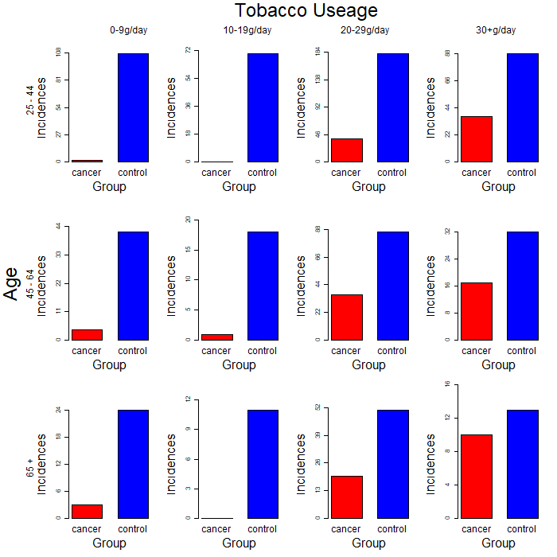

Assignment4: Hackathon
These are the charts that we made: 
This first graph shows the average Overall High School GPA for students based on their eighth grade Math Letter Score. It is separated based on the gender of the student, and the width of each columns is representative of the percent of the gendered population. Therefore, when we look at the leftmost column, which is boys who got an A in eighth grade math, they averaged 3.14 High school GPA, and they make up 34% of boys. The data for this code comes from the High School Longitudinal Study for 2009-2013, so you will need that in order to reproduce the data, and it can be found here.There is also the package scales necessary for the code, it just displays a number as a percentage, so you can remove the whole text command if you do not want to install it. The code for the following graph is:
library(scales)
Dt <- load("Full.RData")
##Load column names
Bar<- data.frame(rep(0,10))
Bar[,1:2] <- cbind(rep(c("Boy", "Girl"), each = 5),rep(c("A","B","C","D","F"),2)); Bar[,1] <- paste(Bar[,1],Bar[,2]); Bar[,2] <- rep(c(0,1), each = 5); Bar[,3] <- rep(c("A","B","C","D","F"),2)
x <- cbind(aggregate(OGPA ~ Sex + EMSC, data = data, FUN = mean))
Bar[,4] <- x[c(1,3,5,7,9,2,4,6,8,10),3]
x <- cbind(aggregate(OGPA ~ Sex + EMSC, data = data, FUN = length))
Bar[,5] <- x[c(1,3,5,7,9,2,4,6,8,10),3]
setwd(pathf)
png(filename = "EPPS6356A4F1.png",
width = 700, height = 700)
Plot <- barplot( height = Bar[,4], names = Bar[,3], width = 2 * Bar[,5]/max(Bar[,5]), space = c(.4,.4,.4,.4,.4,3,.4,.4,.4,.4),
xlab = "Eighth Grade Math Letter Score", ylab = "Overall Highschool GPA", ylim = c(0, 4), main = "Eighth Grade Math Letter Score vs Overall Highscool GPA",
col = rep(c("chartreuse4", "darkolivegreen3", "gold", "darkorange", "darkred"),)
)
text(x = Plot, y = Bar[,4]+.2, labels = signif(Bar[,4], digits = 3))
text(x = Plot, y = Bar[,4]+.1, labels = percent(c(signif((Bar[1:5,5]/sum(Bar[1:5,5])),2),signif((Bar[6:10,5]/sum(Bar[6:10,5])),2)), accuracy = .1), cex = .75)
mtext("Boys", side=1, line=2, at=4); mtext("Girls", side=1, line=2, at=14)
dev.off()
setwd(pathd)

This graph shows the number of cancer incidences in an age, and tobacco usage cohort. The main visual interest in this graph is the relative height of the red bar. Since the cohorts had a different total study number, the bar graphs are scaled around the control group so that visual inspection can easily be done on the rate for each bar graph. For example, the oldest age cohort with the highest tobacco usage, found in the bottom right, has a very high rate of cancer incidence as the red bar is very close to the blue bar. This uses the esoph dataset from r, so the data should come with it. The code for this plot is:
ecan <- esoph
ecan$tob <- ifelse(ecan$tobgp == "0-9g/day", "0-9",
ifelse(ecan$tobgp == "10-19", "10-19",
ifelse(ecan$tobgp == "20-29", "20-29", "30+")))
ecan$agp <- ifelse(ecan$agegp == "25-34", "25-44",
ifelse(ecan$agegp == "35-44", "24-44",
ifelse(ecan$agegp == "45-54", "45-64",
ifelse(ecan$agegp == "55-64", "45-64", "65+"))))
Cdat <- aggregate(ncases ~ agp + tob, data = ecan, FUN = sum)
Cdat[,4] <- aggregate(ncontrols ~ agp + tob, data = ecan, FUN = sum)[,3]
dev.off()
setwd(pathf)
png(filename = "EPPS6356A4F2.png",
width = 700, height = 700)
par(mfrow = c(3,4), oma = c(0,5,3,0))
for(i in 1:12){
Plot <- barplot(height = as.numeric(Cdat[i,3:4]), names = c("cancer", "control"), space = 0.5,
xlab = "Group", ylab = "Incidences", ylim = c(0,max(Cdat[i,3:4])/4)*4, yaxp = c(0,ceiling(max(Cdat[i,3:4])/4)*4, 4),
col = c("red","blue"), cex.axis = 1, cex.names = 1.5, cex.lab = 1.5)
}
par(mfrow=c(1,1))
mtext("Tobacco Usage", side = 3, line = 5.5, at = 1.5, cex = 2)
mtext("0-9g/day", side = 3, line = 4, at = 0)
mtext("10-19g/day", side = 3, line = 4, at = 1)
mtext("20-29g/day", side = 3, line = 4, at = 2)
mtext("30+g/day", side = 3, line = 4, at = 3.1)
mtext("Age", side = 2, line = 7.5, at = 6.5, cex = 2)
mtext("25 - 44", side = 2, line = 6, at = 14)
mtext("45 - 64", side = 2, line = 6, at = 6.5)
mtext("65 +", side = 2, line = 6, at = -1)
dev.off()
Coordinator Info:
The following parts of the graphs were done by the team members: Data Collection and Curation - Alden Graph Formatting - Nick R code Production - Jim and Will